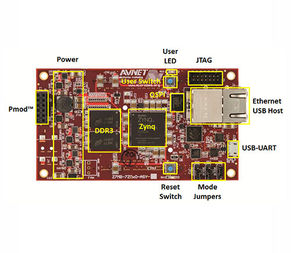

FUSION Project Blog
The official blog for FUSION Project.
A SIMPLE END USER PROGRAMMING INTERFACE
In the context of my master's thesis at the media informatics group of the University of Regensburg I am currently developing and evaluating a programming interface for senor networks, based on the FUSION project.
Sensor networks are an important component of several different fields of application. They can be used gather data in order to automate processes for smart home or in the industrial context. Furthermore, they play a significant role in scientific research, mainly in the field of ecology.
Many end users of sensor networks do not have experience in programming, software engineering and electronics, so it may be difficult for them to design, build and program their own sensor networks. As they might be intrinsically motivated to realize their own custom projects (e.g. in the maker scene and for smart home applications) or it is their job to do so (e.g. in the life sciences), there is a need for a simple programming interface that allows those people to set up sensor networks without needing advanced programming skills.
The programming interace is designed and developed with a user centered approach. Potential users have been interviewed to understand their needs and the development happens as an iterative process based on user feedback.
Stay thuned for the next blog post, which will cover the current progress of the programming interface and give insights into the technical implementation.
PORTING PYNQ TO MICROZED BOARD
A first test of PYNQ has been done on the Microzed board (Zynq 7Z010 version). PYNQ has initially been designed for the Zynq 7Z020. In this test the Microzed board for Zynq 7Z010 was used, so some work on porting PYNQ had to be done first.
Thanks to the the input of Johannes Vanoverschelde and the guidance of Peter Odgen (one of the contributors of the PYNQ project) and Peter Odgen's outlines on how to port PYNQ it was possible to overcome first difficulties and get a successful build of the sd card image.
A github repository for this port of PYNQ has been created. This is a starting point for further development.
In order to get a bootable sd card either a precompiled image can be downloaded from here, or the sd-card image can be compiled by cloning or downloading the repository and following the instructions of the pynq documentation.
git clone https://github.com/ticktronaut/PYNQ.git
SOFTWARE ARCHITECTURE
An essential decision on sustainable architectural design has been made for FUSION project. Creating a software architecture which is handling the benefits of the FPGA and the ARM cores of the zynq processor, while still offering full modularity turned out to be a challenging task. During research on this we came across the PYNQ project, which turned out to have a lot of features we also had in mind. To top it all, it is based on Ubuntu Linux, which offers many conveniences like a package manager.
Pynq supports python programming using jupyter notebooks. Python bindings of brackets of C codes running on soft-cores on the FPGA allow interfacing programmable logic cores. The FPGA bitfiles are provided by so called hardware overlays, which can be used for different purposes on demand during runtime. By this way the development of software, optimized for paralallized hardware, using the Python programming language is possible. See the PYNQ webpage for more information.
It might be a good idea to contribute to this project.
BENEFITS OF A PACKAGE MANAGER
During exploration of Linux systems for FUSION Project on the Microzed board, serveral possiblities have been worked out. Petalinux has been tested (see the blog post about Open AMP). In order to be more flexible according own customizations of the system, the modular embedded linux Yocto project has been examined. It allows customizations, however installing software is very time consuming and requires a lot of knowledge about desired packages and their dependencies.
Since FUSION Projects modular system must be flexible enough to allow software to be added easily in appropriate time, a package manager is essential. Due to this a Debian-based Linux distribution is considered for further experiments.
MICROZED BOARD
The first board FUSION Project will support is AVnets Microzed board. The Microzed board contains one of Xilinx's zynq devices (zynq-7010 or zynq-7020). This System on Chip (SoC) offers the advantages of software programmability of a dual-core ARM-based processor and the hardware programmability of an FPGA. The FPGA may be used for hardware acceleration including features like DSP or CPU soft-cores and parallel execution, while the dual-core ARM processor gives the system the convenience of usablity which is offered by a Linux system. As the previous post shows, one of two ARM cores might still be used for realtime embedded operations temporarily.

ASYMMETRIC MULTI-PROCESSING
FUSION Project relies on Asymmetric Multi-Processing (AMP). The Linux master may launch a remote application on another core. On a demand-driven basis, realtime applications may be outsourced as bare-metal or freeRTOS binaries. For this purpose openAMP was tested on the AVnet Microzed board. All code for this experiment can be found on github (including minimal documentation). The following terminal session shows the execution of some matrix multiplication on cpu1, while running GNU Linux as master on cpu0.
Feel free to experiment on your own.
HEAVY DEVELOPMENT
FUSION Project is under heavy development at the time. Not all features will be available immediately. A keen eye is set on critical design decisions, before going into final implementation.
Premature optimization is the root of all evil. - Donald Knuth
A lot of development work is to be carried out, before the FUSION Project framework can be used properly. Stay tuned. Some interesting steps on the way, documenting this process, of development will be published in this blog from time to time.

Image source: theverge.com